Once cells are clustered, the next questions are which genes mark
each cluster, how widely each is expressed, and which programs the
clusters run. This guide answers them with
heat_map_markers(), heat_map_dot() and
heat_map_score(). It uses the simulated blood cells of the
single-cell guide: 3,000 cells of six
types from four donors, with 2,000 genes, four of them markers of each
type.
library(HeatmapR)
library(SingleCellExperiment)
sce <- heat_map_example("rna", class = "SingleCellExperiment")
table(sce$cell_type)
#>
#> CD4 T CD8 T B NK CD14 Mono DC
#> 930 547 438 297 628 160Finding markers
heat_map_markers() scores every feature in every group
by its AUC against all the other cells: the chance that a cell of the
group has the larger value, ties counting half. This is the Wilcoxon
rank-sum statistic (Wilcoxon 1945; Mann and Whitney 1947) over the
product of the numbers of cells, as presto’s wilcoxauc()
scores markers (Korsunsky et al. 2019). An AUC of 1 means every cell of
the group has more of the feature than every other cell, and 0.5 that it
doesn’t tell them apart.
A feature is kept for a group when it is detected in at least
min_detected (0.1) of the group’s cells and its mean is at
least min_logfc (0.25) above the other cells’. Each feature
marks the group where its AUC is highest, and the top n of
each group are flagged in the top column. Only features
that pass the filters are ranked, and the zeros of sparse data share one
rank, so only the non-zero values are sorted.
m <- heat_map_markers(sce, group_by = "cell_type", n = 3)
head(m[m$top, ], 6)
#> group feature auc logfc p_value p_adj mean_in mean_out
#> 1 CD4 T CCR7 0.9362311 3.171797 0 0 3.429567 0.25777017
#> 2 CD4 T IL7R 0.9280266 3.124902 0 0 3.296346 0.17144413
#> 3 CD4 T LDHB 0.9143694 2.901918 0 0 3.190240 0.28832155
#> 5 CD8 T CD8A 0.9669296 3.376582 0 0 4.031178 0.65459584
#> 6 CD8 T CD8B 0.8962607 2.703851 0 0 2.952239 0.24838792
#> 7 CD8 T GZMK 0.8665903 2.498931 0 0 2.509124 0.01019257
#> detected_in detected_out top
#> 1 0.8924731 0.094685990 TRUE
#> 2 0.8720430 0.061835749 TRUE
#> 3 0.8612903 0.102415459 TRUE
#> 5 0.9579525 0.229922544 TRUE
#> 6 0.8244973 0.090909091 TRUE
#> 7 0.7349177 0.003668977 TRUE| Column | What it holds |
|---|---|
group, feature
|
the group and the feature it marks |
auc |
the AUC of the feature in the group against all other cells |
logfc |
the difference of the means: a log fold change for log-normalised data |
p_value, p_adj
|
the p-value of the Wilcoxon rank-sum test (as
wilcox.test(exact = FALSE) finds it) and its false
discovery rate within the group (Benjamini and Hochberg 1995) |
mean_in, mean_out
|
the means in the group and in the other cells |
detected_in, detected_out
|
the proportions of cells in which the feature is detected |
top |
whether the feature is one of the top n of its
group |
With thousands of cells nearly every marker has a tiny p-value, so
the AUC and the difference of the means say more about how well a gene
marks a group. The features of the top markers, grouped by the group
they mark, are in the "features" attribute:
attr(m, "features")
#> $`CD4 T`
#> [1] "CCR7" "IL7R" "LDHB"
#>
#> $`CD8 T`
#> [1] "CD8A" "CD8B" "GZMK"
#>
#> $B
#> [1] "CD79B" "MS4A1" "CD79A"
#>
#> $NK
#> [1] "PRF1" "GZMB" "GNLY"
#>
#> $`CD14 Mono`
#> [1] "S100A8" "LYZ" "S100A9"
#>
#> $DC
#> [1] "CST3" "FCER1A" "CD1C"top can be edited to choose other markers, e.g. the two
with the highest AUC in each group:
m2 <- m
m2$top <- ave(-m2$auc, m2$group, FUN = rank) <= 2
m2[m2$top, c("group", "feature", "auc")]
#> group feature auc
#> 1 CD4 T CCR7 0.9362311
#> 2 CD4 T IL7R 0.9280266
#> 5 CD8 T CD8A 0.9669296
#> 6 CD8 T CD8B 0.8962607
#> 9 B CD79B 0.9856562
#> 10 B MS4A1 0.9726375
#> 14 NK PRF1 0.9805510
#> 15 NK GZMB 0.9560913
#> 19 CD14 Mono S100A8 0.9465154
#> 20 CD14 Mono LYZ 0.9199636
#> 23 DC CST3 0.9936664
#> 24 DC FCER1A 0.9826827Heatmaps of markers
The markers can be given to features of
heat_map(): the rows with top = TRUE are
shown, and the columns grouped and labelled by the group they mark (as
scanpy’s var_group_positions brackets do).
heat_map(
sce,
features = m,
group_by = "cell_type",
group_max = 150,
axis_text_y = NA,
title = "Top markers of each cell type"
)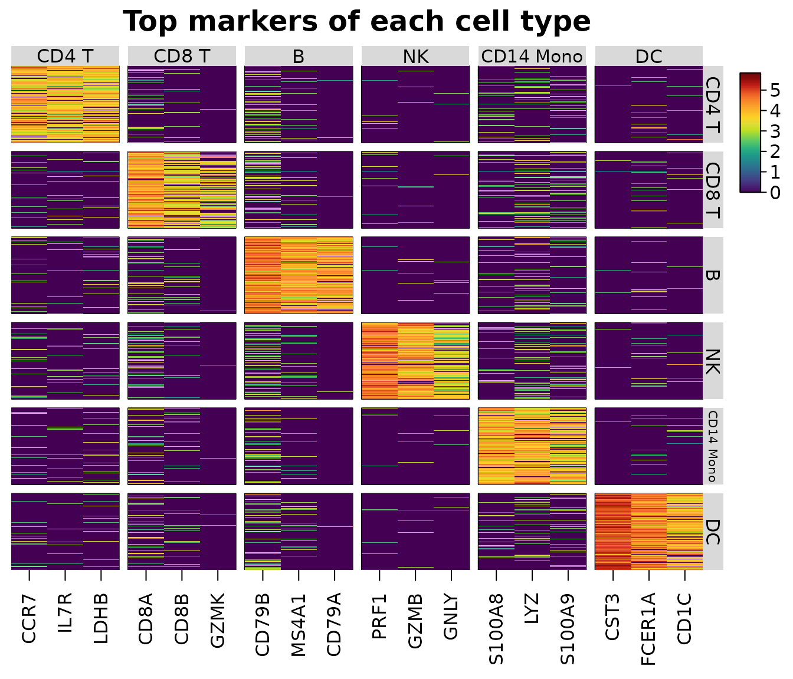
The same markers summarised as the mean of each group, as scanpy’s
matrixplot() and scater’s plotGroupedHeatmap()
draw them, scaled within each gene, with the number of cells of each
group beside it:
means <- heat_map_summarise(sce, features = m, group_by = "cell_type")
heat_map(means, scale = "column", bar_values_y = "n",
legend_title = "Scaled mean", title = "Mean of each marker")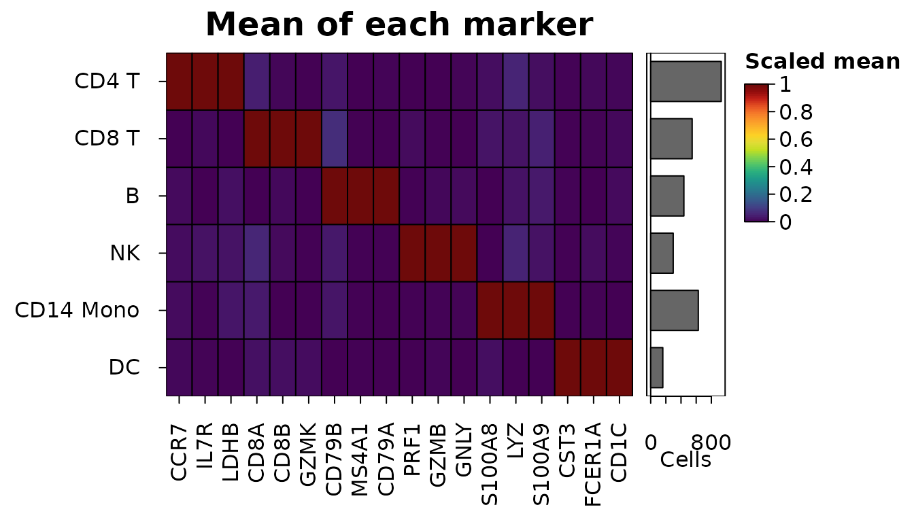
How the markers vary together across cells is a correlation heatmap.
heat_map_cor() clusters the genes on their correlations,
shows ellipses below the diagonal and the coefficients above it, and
puts each type’s markers in a block:
x <- as.matrix(Matrix::t(logcounts(sce)[unlist(metadata(sce)$markers), ]))
heat_map_cor(x, title = "Correlations of the marker genes")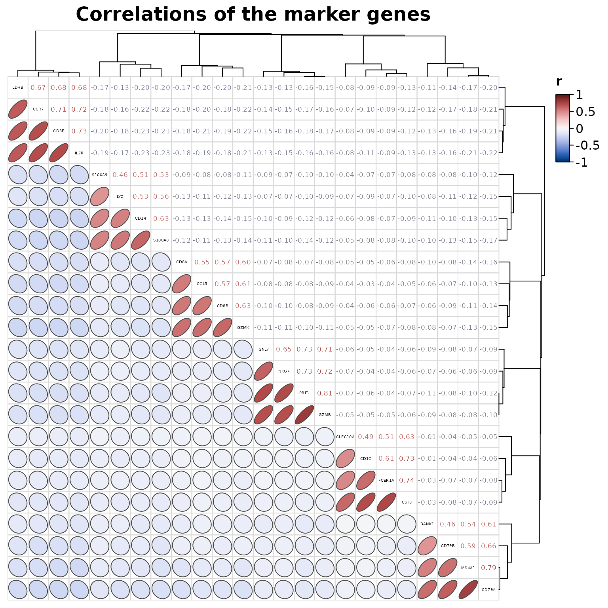
Dot plots
heat_map_dot() draws one row per group and one column
per feature. The colour of each dot is the group’s mean, scaled within
the feature: z-scores clipped at ±2.5 by default, as Seurat’s
DotPlot() (Hao et al. 2024) scales them. The area of each
dot is the proportion of the group’s cells in which the feature is
detected, with a size legend in percent.
heat_map_dot(sce, features = m, group_by = "cell_type", title = "Top markers")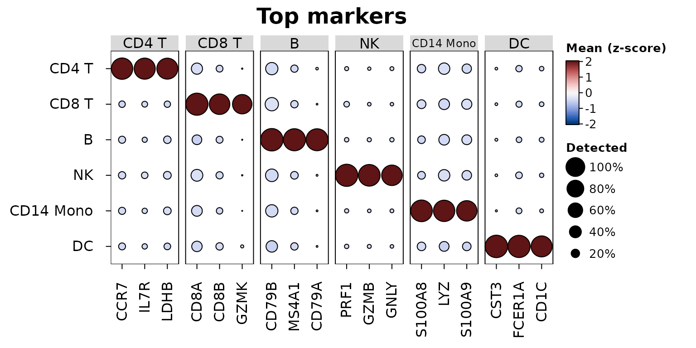
The settings of the dot plot:
-
scale:"zscore"(default),"range"to scale each feature from 0 to 1 (scanpy’sstandard_scale = "var"; Wolf, Angerer and Theis 2018), or"none"for the means themselves (scanpy’s default). -
scale_limits: the limits that scaled means are clipped to. -
threshold: values above it count as detected (0 by default). -
dot_min: the smallest proportion detected for a dot to be drawn, as Seurat’sdot.min. -
swap_axes = TRUE: features as rows and groups as columns.
Every heat_map() setting can be added too. Here the
means are scaled from 0 to 1, with a dendrogram of the groups and bars
of their numbers of cells:
heat_map_dot(sce, features = m, group_by = "cell_type", scale = "range",
tree_y = TRUE, dot_min = 0.05, bar_values_y = "n",
title = "Scaled 0 to 1")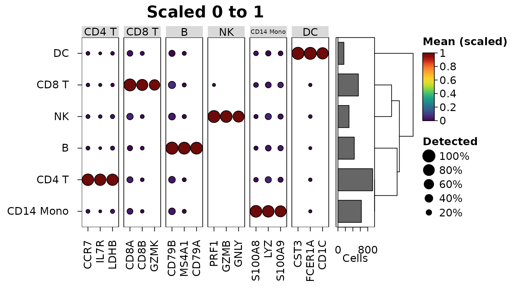
Groups within groups
Several columns in group_by group the cells by their
combinations, ordered by the first column and then the next within it. A
dot plot then has one row per combination, grouped by the first column
in labelled strips and labelled by the others:
heat_map_dot(sce, features = m, group_by = c("cell_type", "condition"),
title = "Markers in each condition")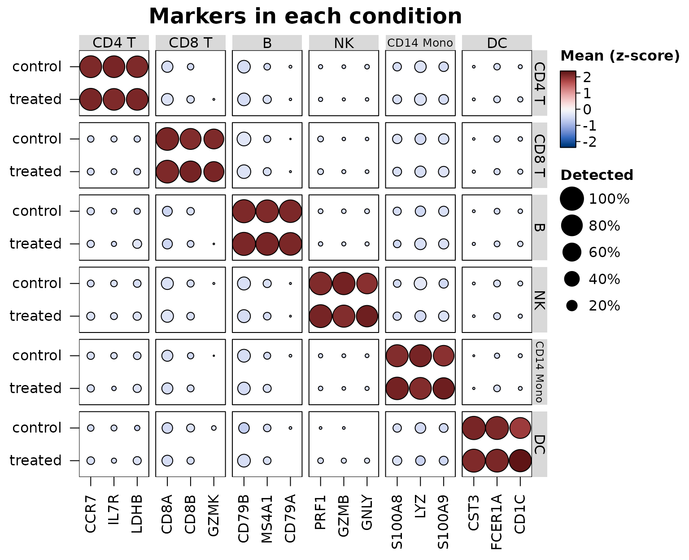
split_by shows two conditions in one row instead, each
dot split down the middle; Samples and
conditions compares conditions this way.
Dot plots of markers
The markers themselves can be drawn as a dot plot.
heat_map_dot(m) colours each dot by the log fold change of
the gene in the group and sizes it by -log10 of the adjusted p-value, as
scanpy’s rank_genes_groups_dotplot() does;
marker_colour and marker_size choose other
columns (e.g. "auc" or "detected_in"). A gene
has a dot in each group where it passed the filters of
heat_map_markers(). With min_detected = 0 and
min_logfc = -Inf every gene passes in every group, so the
dot plot also shows where each marker is lower than in the other
cells:
all_pairs <- heat_map_markers(sce, group_by = "cell_type", n = 3,
min_detected = 0, min_logfc = -Inf)
heat_map_dot(all_pairs, title = "Markers by fold change and p-value")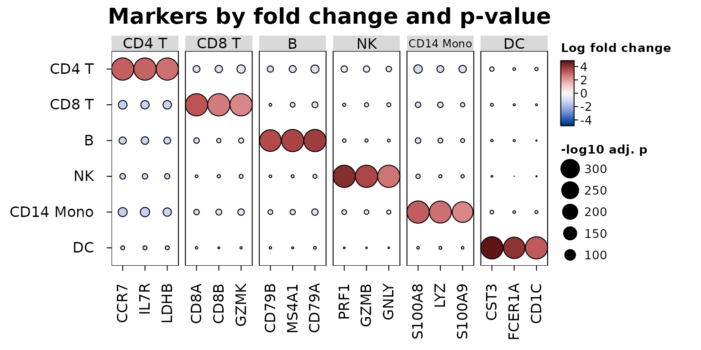
Gene-set scores
heat_map_score() scores each cell for each of several
sets of genes, so a heatmap or dot plot can show a handful of pathways
or programs in place of hundreds of genes. It has three methods:
-
"zscore"(default) averages the genes of a set after z-scoring each across the cells, so a highly expressed gene doesn’t outweigh the others. -
"mean"averages the values themselves. -
"module"subtracts the mean of control genes of similar expression, the score of Tirosh et al. (2016), which Seurat’sAddModuleScore()and scanpy’sscore_genes()also compute. Every gene is binned by its mean expression and, for each gene of the set, 100 genes of its bin are drawn as controls with a fixed seed, so a score above zero means more expression than genes of that level usually have.
The scores are computed from the non-zero values of sparse data, and come back as a matrix of one column per set that keeps the metadata of the cells, so they are drawn and summarised like genes:
programs <- list(
T = c("CD3E", "IL7R", "CD8A", "CD8B"),
B = c("MS4A1", "CD79A", "CD79B", "BANK1"),
Myeloid = c("LYZ", "S100A8", "S100A9", "FCER1A", "CST3"),
NK = c("GNLY", "NKG7", "PRF1", "GZMB")
)
scores <- heat_map_score(sce, programs)
head(scores, 3)
#> T B Myeloid NK
#> cell1 0.5140542 -0.60518748 -0.5292884 -0.3489821
#> cell2 -0.6186938 -0.60518748 0.6131608 0.1426825
#> cell3 0.5591864 -0.09516874 -0.5292884 -0.3489821
heat_map(scores, group_by = "cell_type", group_max = 100, axis_text_y = NA,
legend_title = "Score", title = "Scores of each cell")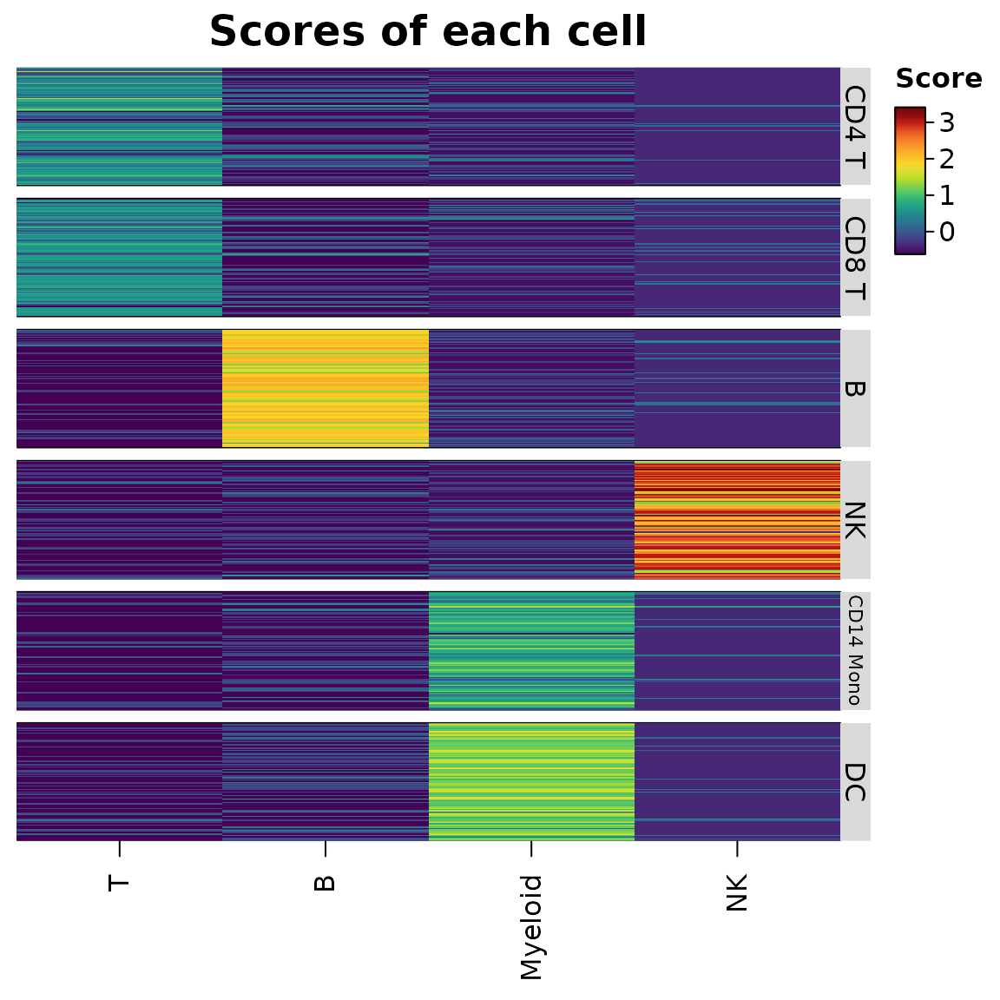
In a dot plot the size of each dot is the share of the group’s cells
scoring above zero (threshold). Here are the module
scores:
modules <- heat_map_score(sce, programs, method = "module")
heat_map_dot(modules, group_by = "cell_type", title = "Module scores")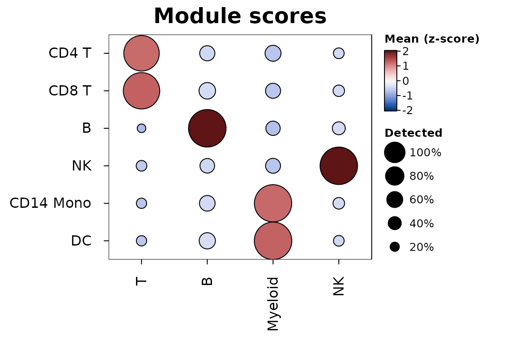
The markers of heat_map_markers() give one set per group
(heat_map_score(sce, m)), and sets naming genes that aren’t
in the data are scored on the genes that are, with a message.
Data sets side by side
heat_map_align() draws data sets measured on the same
cells or groups side by side as blocks of one heatmap: genes and surface
proteins (ADT) of CITE-seq, expression and chromatin accessibility, or
genes and scores. The rows are matched by name and put in one order,
clustered (tree = TRUE) or split by k-means
(tree_kmeans) on the main data set alone. Each
block is scaled on its own and has its own colour scale and legend, so
values in different units never share a scale.
Here are the mean marker genes of each cell type beside their module scores, the genes z-scored within each gene and the scores on a diverging scale centred at zero:
gene_means <- heat_map_summarise(sce, features = unlist(metadata(sce)$markers),
group_by = "cell_type")
module_means <- heat_map_summarise(modules, group_by = "cell_type")
heat_map_align(
list(Genes = gene_means, Programs = module_means),
scale = list("column", NULL),
cell_col_scale = list(NULL, "Blue-Red 3"),
cell_col_scale_center = list(NULL, 0),
tree = TRUE,
title = "Marker genes and module scores of each cell type"
)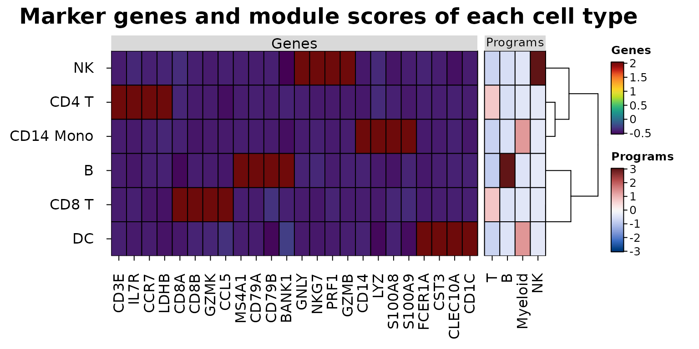
For CITE-seq data in a Seurat object, the summaries of
the two assays are aligned the same way,
e.g. heat_map_summarise(seu, group_by = "seurat_clusters")
beside
heat_map_summarise(seu, assay = c("ADT", "data"), group_by = "seurat_clusters").
With axis = "y", data sets that share their columns
(e.g. genes and proteins as rows, groups as columns) are stacked as
blocks of rows. heat_map(cell_col_blocks_x = ) gives any
heatmap blocks of columns on their own colour scales.
Clusters that may be two populations
A cluster can combine two populations that clustering didn’t
separate. bimodal = TRUE outlines the cells of a summary or
dot plot in which a group’s cells look like two populations, so that
such clusters can be looked into. Each outline comes from the dip
statistic of Hartigan and Hartigan (1985): the distance between the
distribution of a feature’s values in the group and the closest
distribution with one peak.
Populations that differ in whether genes are detected at all, such as CD4 and CD8 T cells in one cluster, each without the other’s markers, don’t give any single gene two peaks. On the count scale a gene detected in only some of the cells falls away steadily from zero, as dropout does. They are found across genes instead. HeatmapR takes the first principal component of the correlations of the features shown within the cluster, when that component carries real co-variation: an eigenvalue above the upper edge of the Marchenko-Pastur law for independent features (Marchenko and Pastur 1967). It then measures the dip of the cells’ scores on that component, so features with two peaks of their own don’t add up to a split, and outlines the features that drive it. Here the CD4 and CD8 T cells are one cluster:
cells <- as.data.frame(colData(sce))
cells$group <- as.character(cells$cell_type)
cells$group[cells$group %in% c("CD4 T", "CD8 T")] <- "T cells"
hm <- heat_map_dot(sce, features = metadata(sce)$markers, group_by = cells$group,
bimodal = TRUE, title = "CD4 and CD8 T cells joined")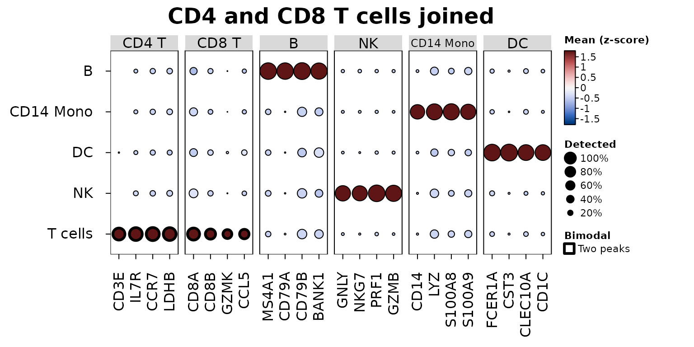
heat_map_describe() names what is outlined, and
heat_map_info(hm)$bimodal returns the dips:
heat_map_describe(hm)
#> Heatmap titled "CD4 and CD8 T cells joined" of 5 rows by 24 columns. Colours
#> show Mean (z-score), from dark blue (-1.79) through white to dark red (1.79).
#> Cell size shows a second set of values, from 0 to 1. The highest value is 1.79
#> (B, MS4A1) and the lowest is -0.638 (B, CD8A). The cells of T cells (dip
#> 0.0817, in CD3E, IL7R, CCR7, LDHB and 4 more) may combine populations that
#> differ in several features at once (the dip of their first principal
#> component); the features driving it are outlined. Columns are split into 6
#> groups, numbered from the left: CD4 T (4 columns, e.g. CD3E and IL7R) is
#> highest for T cells and NK and lowest for DC and B; CD8 T (4 columns, e.g. CD8A
#> and CD8B) is highest for T cells and DC and lowest for B and CD14 Mono; B (4
#> columns, e.g. MS4A1 and CD79A) is highest for B and DC and lowest for NK and
#> CD14 Mono; NK (4 columns, e.g. GNLY and NKG7) is highest for NK and B and
#> lowest for DC and T cells; CD14 Mono (4 columns, e.g. CD14 and LYZ) is highest
#> for CD14 Mono and T cells and lowest for DC and B; DC (4 columns, e.g. FCER1A
#> and CST3) is highest for DC and B and lowest for NK and CD14 Mono.An outline is a prompt to look, not a verdict: two states of one population (e.g. stimulated and resting cells) give two peaks too. The cytometry guide shows outlines of single markers, the thresholds of the dip and the distributions behind them.
References
Benjamini, Y. and Hochberg, Y. (1995). Controlling the false discovery rate: a practical and powerful approach to multiple testing. Journal of the Royal Statistical Society: Series B, 57(1), 289-300. doi:10.1111/j.2517-6161.1995.tb02031.x
Hao, Y. et al. (2024). Dictionary learning for integrative, multimodal and scalable single-cell analysis. Nature Biotechnology, 42(2), 293-304. doi:10.1038/s41587-023-01767-y
Hartigan, J. A. and Hartigan, P. M. (1985). The dip test of unimodality. The Annals of Statistics, 13(1), 70-84. doi:10.1214/aos/1176346577
Korsunsky, I., Nathan, A., Millard, N. and Raychaudhuri, S. (2019). Presto scales Wilcoxon and auROC analyses to millions of observations. bioRxiv. doi:10.1101/653253
Mann, H. B. and Whitney, D. R. (1947). On a test of whether one of two random variables is stochastically larger than the other. The Annals of Mathematical Statistics, 18(1), 50-60. doi:10.1214/aoms/1177730491
Marchenko, V. A. and Pastur, L. A. (1967). Distribution of eigenvalues for some sets of random matrices. Mathematics of the USSR-Sbornik, 1(4), 457-483. doi:10.1070/SM1967v001n04ABEH001994
Tirosh, I. et al. (2016). Dissecting the multicellular ecosystem of metastatic melanoma by single-cell RNA-seq. Science, 352(6282), 189-196. doi:10.1126/science.aad0501
Wilcoxon, F. (1945). Individual comparisons by ranking methods. Biometrics Bulletin, 1(6), 80-83. doi:10.2307/3001968
Wolf, F. A., Angerer, P. and Theis, F. J. (2018). SCANPY: large-scale single-cell gene expression data analysis. Genome Biology, 19, 15. doi:10.1186/s13059-017-1382-0